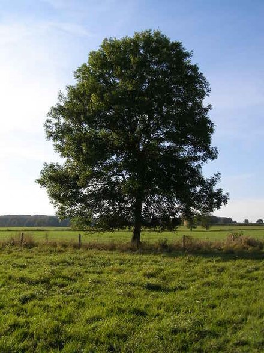

Trees by Joyce Kilmer
I think that I shall never see
A poem lovely as a tree.
Against the earth's sweet flowing breast;
And lifts her leafy arms to pray;
A nest of robins in her hair;
Who intimately lives with rain.
But only God can make a tree.
I think that I shall never see
A poem lovely as a tree.